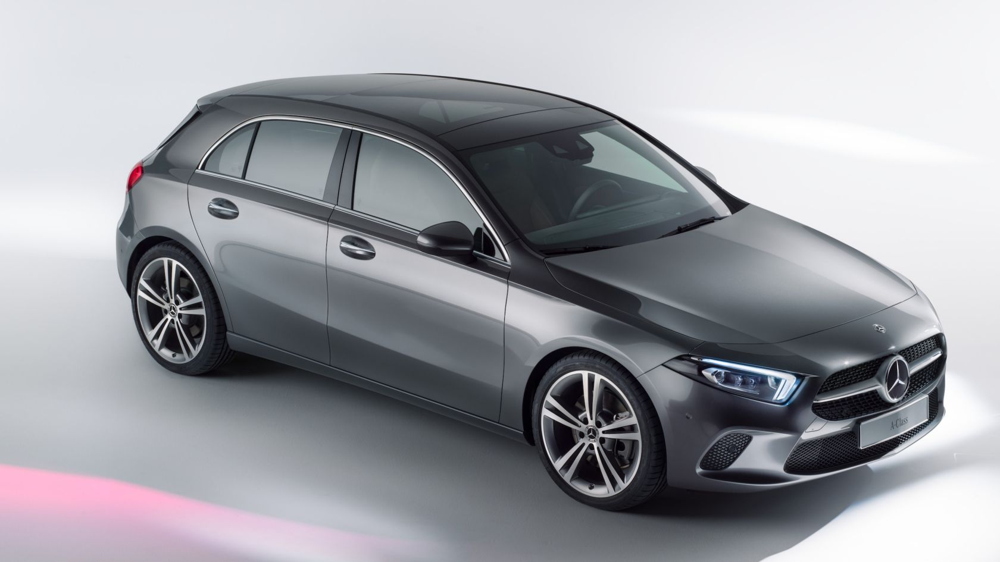

A class
Driving Performance. Authentic, dynamic handling thanks to hallmark AMG DNA. Mercedes-AMG does not just
develop
performance models and sports cars; with a Mercedes-AMG, we make you a promise: to always go one step
further to
convert what is technically feasible into an inimitable reality. To create exceptional motor cars for
exceptional people. Welcome to the world of Mercedes-AMG.
The Mercedes-AMG A 35 4MATIC model is available for the new A-Class.Driving Performance. Authentic, dynamic handling thanks to hallmark AMG DNA. Mercedes-AMG does not just develop performance models and sports cars; with a Mercedes-AMG, we make you a promise: to always go one step further to convert what is technically feasible into an inimitable reality. To create exceptional motor cars for exceptional people. Welcome to the world of Mercedes-AMG. The Mercedes-AMG A 35 4MATIC model is available for the new A-Class.
The Mercedes-AMG A 35 4MATIC model is available for the new A-Class.Driving Performance. Authentic, dynamic handling thanks to hallmark AMG DNA. Mercedes-AMG does not just develop performance models and sports cars; with a Mercedes-AMG, we make you a promise: to always go one step further to convert what is technically feasible into an inimitable reality. To create exceptional motor cars for exceptional people. Welcome to the world of Mercedes-AMG. The Mercedes-AMG A 35 4MATIC model is available for the new A-Class.
